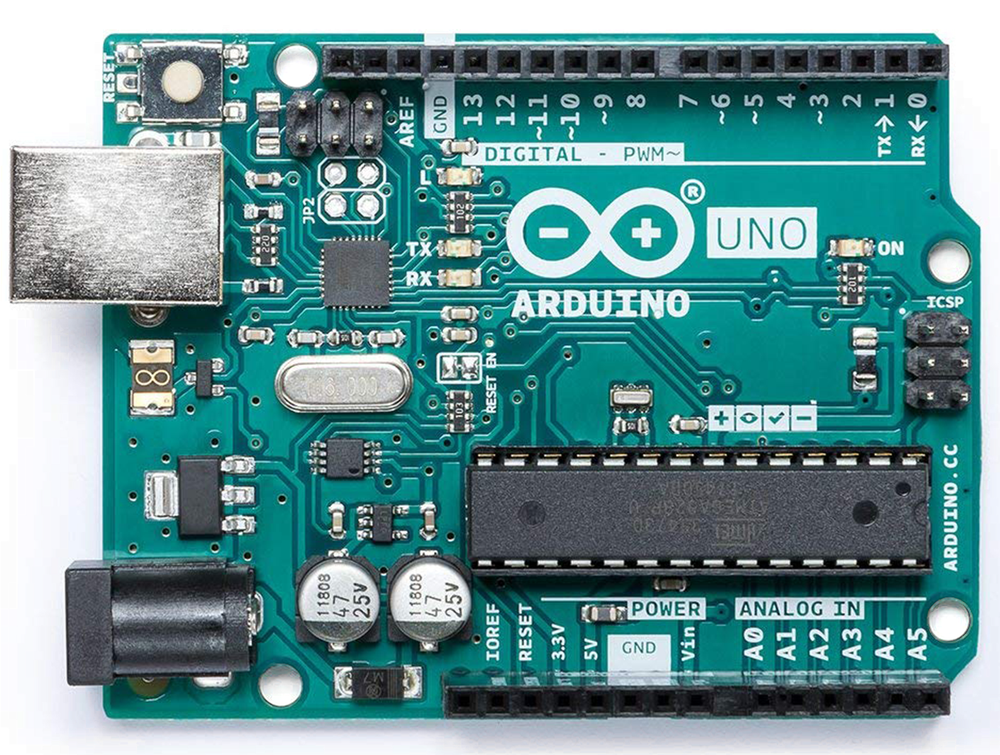
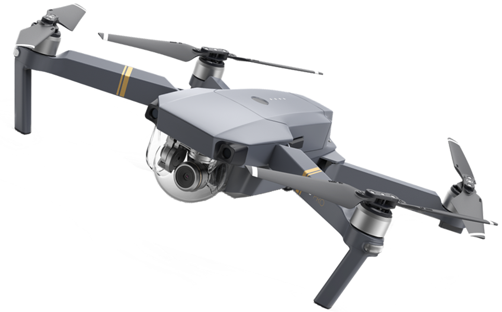

Kuy Belajar Robot !
Irtech Merupakan Platform dan wadah untuk mencari inspirasi dan berkreasi bagi siapa saja yang tertarik dalam bidang robotik


TeSchool merupakan platform belajar robot yang mengutamakan pemahaman dan kenyamanan belajar dari pengguna sehingga belajar robot menjadi mudah dan mengasyikan.
Setiap satu konten disini kami menyebutnya course, dalam satu course terdiri dari beberapa video dengan durasi maksimal 10 menit tiap videonya, beberapa kuis, ujian praktek, simulasi, dan konsultasi tugas ditempat. Kemudian setiap pengguna dapat menyewa course untuk satuan waktu yang ditentukan.
TeSchool berguna sebagai platform pengajaran teknologi untuk tingkat pelajar hingga profesional dengan materi robotika yang sedang popular saat ini maupun materi dasar yang menjadi landasan. Platform ini dapat digunakan oleh pelajar sebagai ilmu tambahan agar melek teknologi sehingga siap dalam menghadapi perubahan zaman dimana pengajaran ilmu lebih banyak menggunakan teknologi. Selain itu platform ini juga dapat digunakan oleh mahasiswa untuk mengasah skill mereka dalam bidang robotika dengan mencoba langsung pada hardware berdasarkan panduan pada suatu course dengan bimbingan mentor yang andal.
 